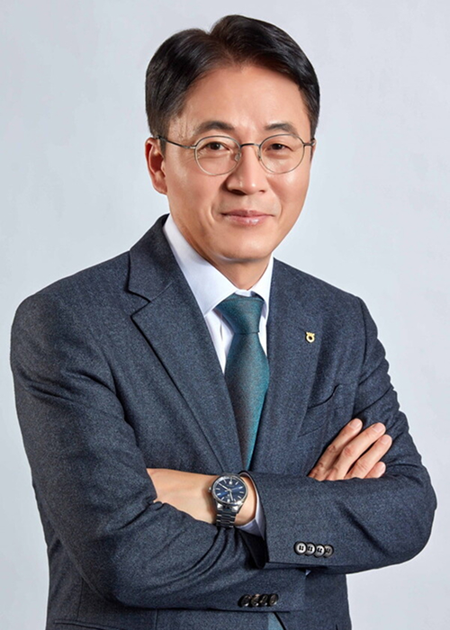

회사소개
회사소개
home > 회사소개 > 인사말
Ceo Message
인사말

농협식품은 단순함을 추구하라는
경영철학을 바탕으로
생태계의 건강을 위해 노력하고 있습니다.
농협식품은 2017년 7월에 건강한 국민, 행복한 농업인, 조합과 함께하는
국산 농산물 특화 협동조합형 농식품회사라는 비전을 가지고 설립되었습니다.
농협식품은 이러한 비전을 실현하기 위해 쌀·콩·과·채를 중심으로
원물의 건강함을 담은 프리미엄 국산 가공식품을 제조, 유통하고 있습니다.
농협식품은 우리 농산물을 원료로 사용하여 국민들에게 우수한 먹거리를 제공하여
국민건강 증진에 기여하고, 우리 농산물의 부가가치 향상을 통하여,
농업인에게는 소득증대, 식품가공공장에게는 활성화를 통한 수익기여, 나아가서 조합 및
조합원들의 발전을 꾀하고 있습니다.
이를 달성하기 위해 기존 식품회사들과의 차별화를 통해 농협식품만이 제공할 수 있는
고객가치를 찾아 특화시켜 고객들이 기꺼이
농협식품에서 만든 상품을 소비할 수 있도록 가치를 제공할 것을 약속드립니다.